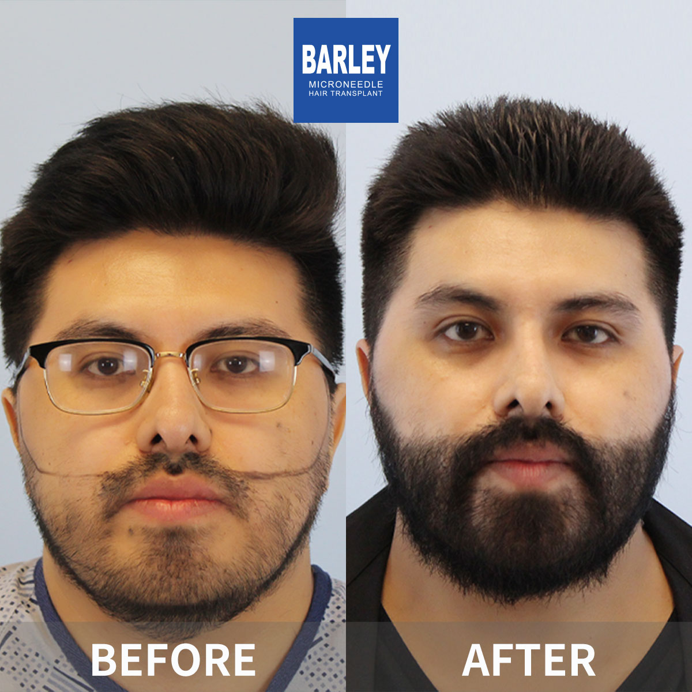
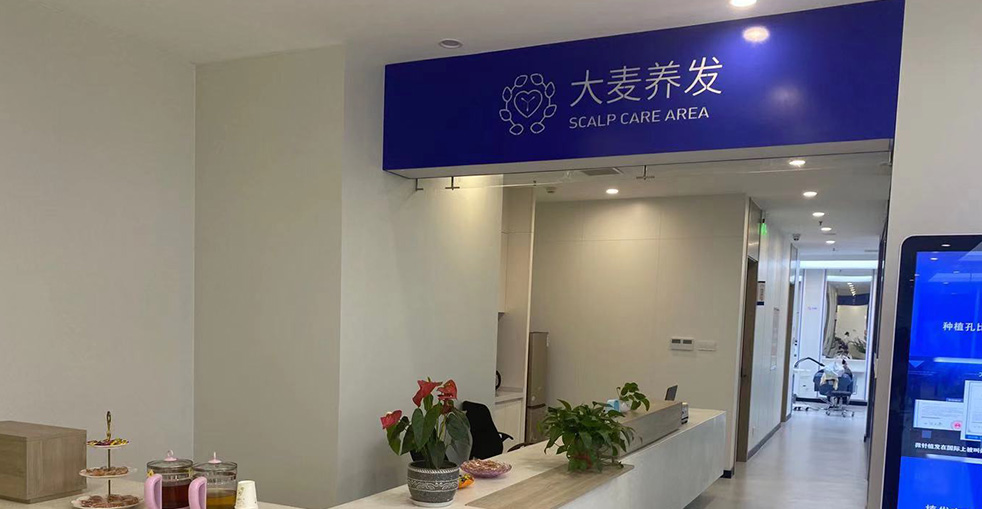

Artistic eyebrow design and precision transplantation for perfect facial framing

Our eyebrow transplant procedure is an art form that requires both surgical precision and aesthetic expertise. Our specialized team has performed thousands of eyebrow restorations, creating natural, beautiful eyebrows that perfectly complement your facial features. We use ultra-fine microneedle technology to place each follicle individually, ensuring the most natural growth direction and density.
Personalized eyebrow design based on facial features and temperament
Artistic design meets surgical precision
Detailed facial analysis and personalized eyebrow design based on your features
Precise eyebrow template created and approved before any procedure begins
Careful harvesting of fine, single-hair follicles from suitable donor areas
Ultra-fine incisions following natural eyebrow growth direction and angles
Individual follicle placement creating perfect density, arch, and flow
Detailed care instructions and 12-month follow-up for optimal results
Industry leader with proven results
Pioneer and leader in microneedle hair transplant technology since 2006
Across major cities in China, all with the same high standards
Innovative microneedle and implant pen technology for superior results
Trusted by patients from around the globe for life-changing results
Full English support for international patients throughout treatment
State-of-the-art facilities and strict safety protocols for your peace of mind
See the amazing transformations our patients have achieved




Moments captured with our satisfied patients

Posing with our medical team after successful procedure

Celebrating fantastic results with our doctors

Another satisfied patient shares their joy

Patient with our specialist before discharge

Happy patient with Dr. Chen post-treatment

Excited patient showing their new look
Hear from our satisfied patients around the world
"My eyebrows were so sparse from years of over-plucking! Barley's eyebrow transplant gave me full, natural eyebrows! I don't have to spend 30 minutes filling them in anymore!"
"The doctor designed my eyebrows specifically for my face! They look so natural - my friends can't even tell I had a transplant! I feel so much more confident!"
"I had lost most of my eyebrows due to alopecia! Barley's transplant restored them completely! Now I have beautiful, full eyebrows that frame my face perfectly!"
"I researched on Google for months before choosing Barley for my eyebrows! The 360-degree implant pen made them look so natural! Best decision I ever made!"
"My eyebrows were so thin that I felt self-conscious about photos! After the transplant, I love taking pictures now! The results are perfect - natural and full!"
"I had spent thousands on microblading that never looked right! The eyebrow transplant gave me permanent, natural-looking eyebrows! I'm so happy with the results!"
Experience our modern and comfortable facilities

Our state-of-the-art facility

Relax in our premium lounge

Sterile and advanced

Private and professional

Comfortable post-op space

Welcoming entrance
Find answers to common questions about hair transplantation
Contact us for a free consultation
15810155700
+86 13730143529
hairtransplant@qq.com